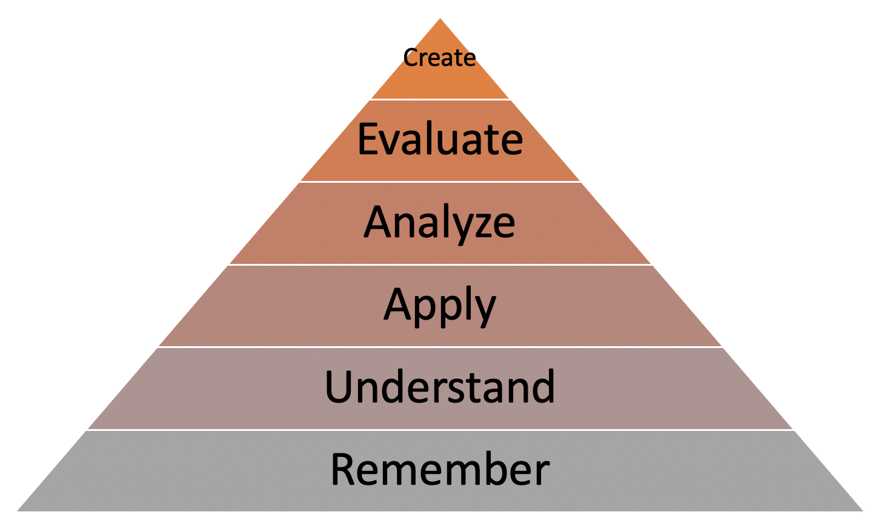
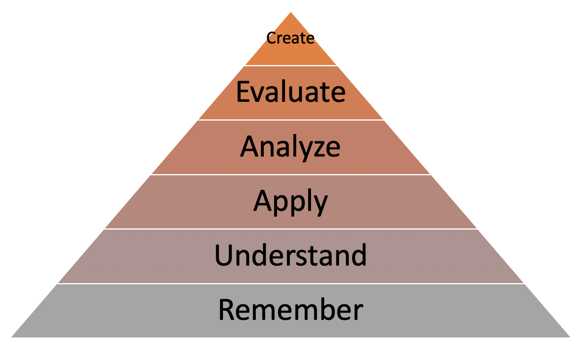

Why SmartArt matters
Using SmartArt graphics is beneficial for constructing diagrams professional-looking instead of building diagrams from scratch quickly and easily. Also, it allows you to communicate concepts with graphics rather than using text. The word document and PowerPoint has a SmartArt graphic in the illustration groups which consist of a range of graphic layouts that help in visualizing idea or information into a simple to complex diagrams. Each SmartArt layout provides a different way to convey your content and illustrate your message by selecting a specific layout from the SmartArt graphic and then customizing it to fit your needs. In addition, there is greater effectiveness in SmartArt graphics when shapes and text are limited to key points because it is difficult to convey your idea visually when your SmartArt graphic has a lot of text.
SmartArt enable you to:
- Add diagrams to show a variety of relationships.
- Switch between SmartArt graphic types easily to determine what works best for you.
- Modify the colors and effects of your SmartArt graphic so they will match with your presentation's theme colors.
- Edit individual shape elements within the SmartArt graphic to further customize the look.
Hint: Hover over the image below to see an example illustration of a learning theory!
 

References
Attribution: Microsoft PowerPoint 2010 - Level 1. SmartArt